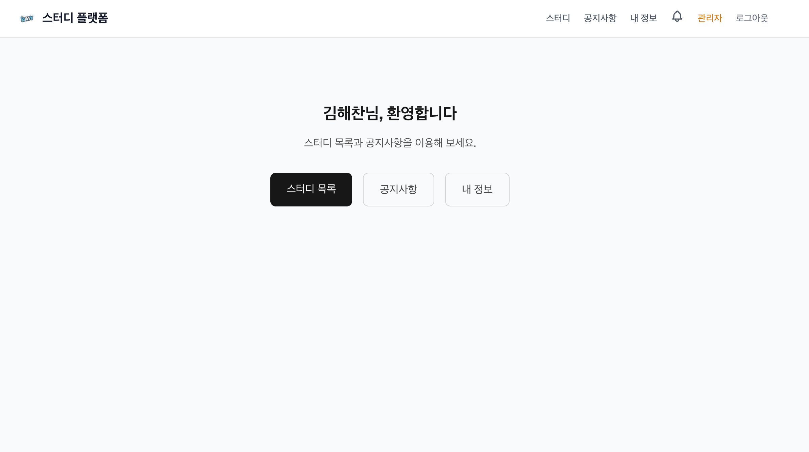
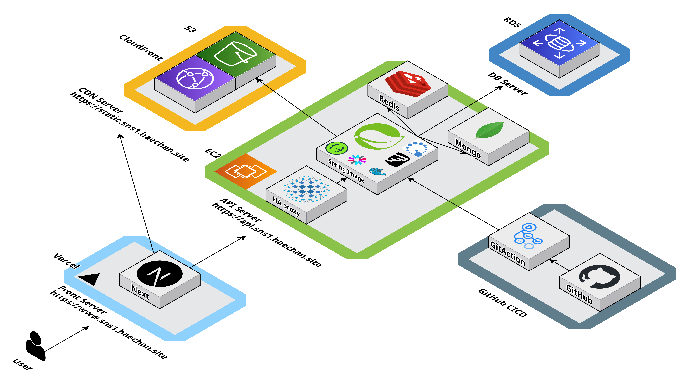
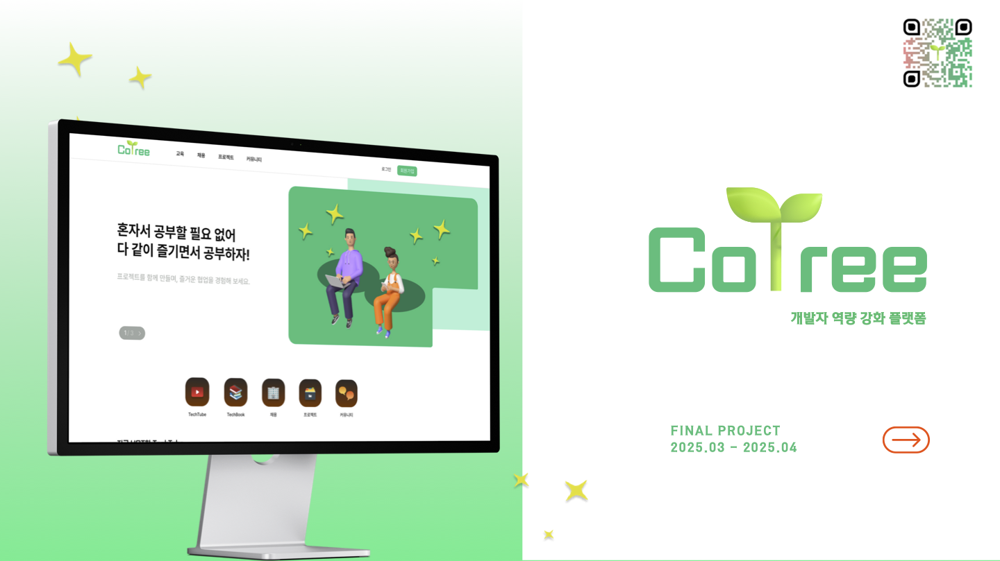

About
나를 소개합니다
"문제를 다양한 관점에서 바라보고, 보안과 유지보수성을 고려한 백엔드 개발을 지향합니다."
이름
김해찬
전공
정보보안암호수학
강점
보안 인식 · 새로운 기술 습득
단순한 기능 구현이 아니라 보안·성능·확장성을 함께 고려한 설계, 팀워크와 코드 리뷰를 통한 성장을 지향합니다.
Skills
기술 스택
언어
백엔드
프론트엔드
데이터베이스
인프라 & 배포
테스트
CI/CD & 보안
기타
Projects
프로젝트

2026.03 (2주)
SSAFY Study
알고리즘, 자료구조, CS 핵심 개념을 정리한 스터디 저장소. 꾸준한 문제 풀이와 개념 기록으로 기본기를 다집니다.

2025.07 — 2025.08
SNS Service
기획부터 개발·배포까지 전담한 1인 SNS 서비스. STOMP·SSE 기반 실시간 채팅과 알림 구현, Terraform과 GitHub Actions로 인프라·CI/CD 자동화. AWS SDK v2 버그를 공식 레포에 이슈 제보(#6127).

2025.03 — 2025.04
Cotree
인프런과 유사한 교육 플랫폼. Spring Security + JWT 기반 회원 도메인 전반 담당(이메일 인증, 카카오 OAuth), 리뷰 조회 쿼리 최적화와 복합 인덱스 적용으로 응답 속도 2배 이상 개선.
Career
경력 & 학력
2026.01 — 2026.03
삼성 청년 SW AI 아카데미 (SSAFY)
SW 역량 강화 과정
- 알고리즘, 자료구조 집중 학습 및 코딩 테스트 역량 강화
- Java·Python 기반 문제 풀이와 CS 핵심 개념 체계적으로 정리
- 팀 프로젝트를 통한 협업 및 백엔드 서비스 개발 경험
6개월
Effective Java 심화 스터디
스프링 및 Java 심화 학습
- Effective Java를 함께 읽으며 객체 지향과 Java 관용구 심화 학습
- 코드 리뷰와 실습 중심으로 백엔드 개발 역량 강화
2024.11 — 2025.04
프로그래머스 데브코스
클라우드 기반 백엔드 엔지니어링
- Spring Framework, MySQL 기반 백엔드 서비스 개발 역량 강화
- Terraform을 활용한 AWS 인프라 코드 관리(IaC) 학습
- Git/GitHub 기반 CI/CD 파이프라인과 RESTful API 협업으로 자동 배포 경험
2018.03 — 2024.02
국민대학교
정보보안암호수학과
- 수학적 원리에 기반한 암호학 이론 학습 및 C/C++로 암호 모듈 최적화
- 공개 키 기반 구조(PKI)의 인증 및 서명 로직 직접 구현
- Python을 활용한 통계 기반 데이터 분석, 전처리 및 시각화
자격증
빅데이터 분석기사 · 2024.07
정보처리기사 · 2024.06
SQLD · 2023.07
GitHub
github.com/k-haechan